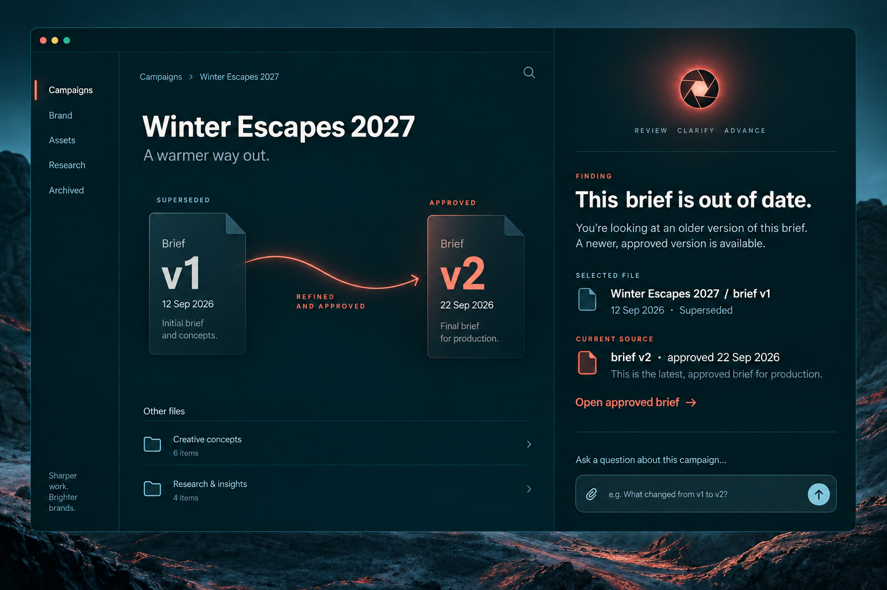

A signal you can trust.
Petrol creates focus. Coral draws attention to a finding. Ice identifies an approved source. A compact grammar for Averill, the independent desktop company agent.
Chosen direction
The concept image is a visual reference. The live Electron app is still separate from this specimen.

Color roles
Each accent has a job; neither is used just to decorate.
#08282E#0D353D#FF705E#A8DBDE#F5F1EAType voices
Three families, each with a clear role. The specimen loads web fonts for review; the desktop app should bundle files locally.
This brief is out of date.
A newer approved version is available. Open the cited source before updating your work.
BRIEF V2
APPROVED · 22 SEP 2026
1 SOURCE
Core components
Read the finding, see the source, choose an action. The assistant never changes the employee's draft.
Choose a brief
This component specimen shows visual states only. The implementation must preserve actual sharing, citation, opt-in AI and source-opening behavior.